Echizen, Fukui: things to do, food and stays
Echizen · Fukui
Echizen
Highlighted on the Fukui map.

Stay
ホテルルートイン武生インター
Hotel Route Inn Takefu Inta
Hotel in Kuzuoka, Echizen with buffet meals and breakfast available; 1-minute drive from Takefu IC.
鎌仁別荘 宿 松濤
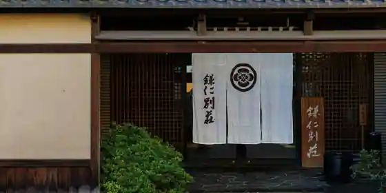
Kama Hitoshi Besso Yado Shoto
ホテルクラウンヒルズ武生駅前（ＢＢＨホテルグループ）
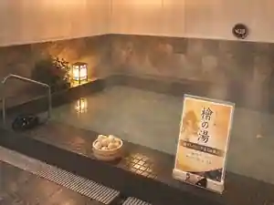
Hotel Kuraunhiruzu Takefu Ekimae (BBH Hotel Gurupu)
Hotel in Fuchu, Echizen with breakfast available.
天然温泉 蓬莱山の湯 スーパーホテル越前・武生
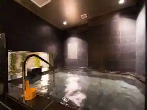
Tennen Onsen Horai Yama No Yu Super Hotel Echizen Takefu
Hotel in Horai, Echizen with buffet meals and breakfast available.
和宿 多葉喜
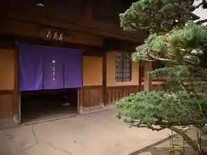
Wa Yado Ta Ha Ki
ホテル 赤星亭
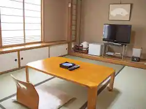
Hotel Akaboshi Tei
Hotel in Komatsu, Echizen with Wi-Fi and a sauna.
プリンスホテルタケフ
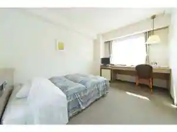
Purinsu Hotel Takefu
Hotel in Yokoshi, Echizen with Wi-Fi and parking.
ＡＢホテル越前武生
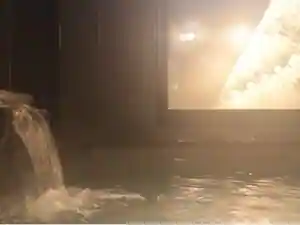
AB Hotel Echizen Takefu
Hotel in Yokoshi, Echizen with buffet meals and breakfast available.
越前和紙を体感する工芸宿 SUKU
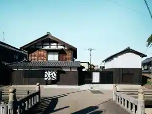
Echizen Washi Wo Taikan Suru Kogei Yado SUKU
Dining
そば蔵 谷川
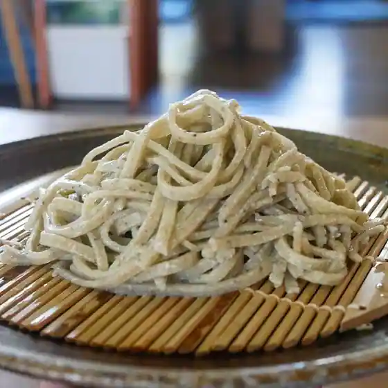
Soba Kura Tanigawa
馳走飯田
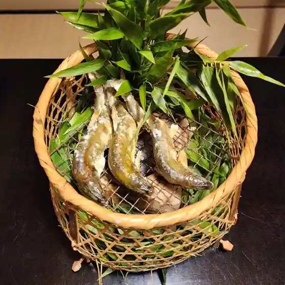
Chiso Ida
うるしや
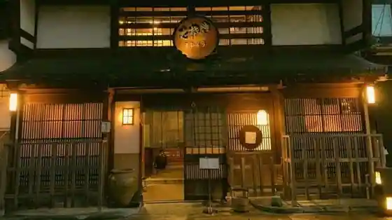
Urushiya
寿司とよ
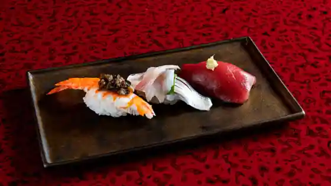
Sushi Toyo
くらそば幸道
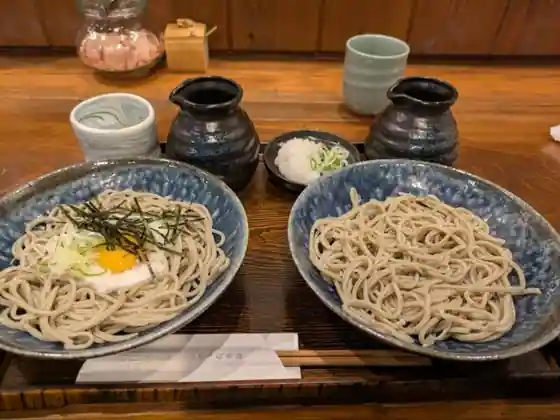
Kurasoba Yukimichi
江戸屋
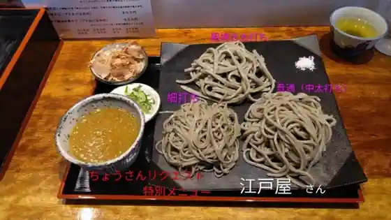
Edoya
四季の餅 あめこ
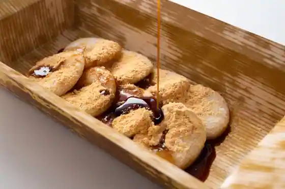
Shiki No Mochi Ameko
森六
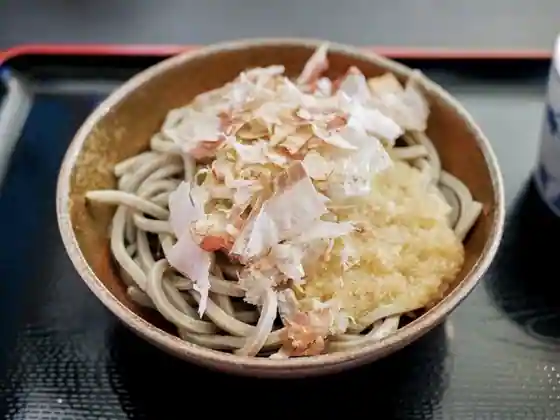
Mori Roku
遊亀庵 かめや
Yuki Iori Kameya
生蕎庵
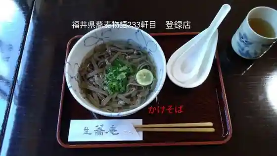
Nama Kyo Iori
ヨコガワ分店
Yokogawa Fun
御清水庵
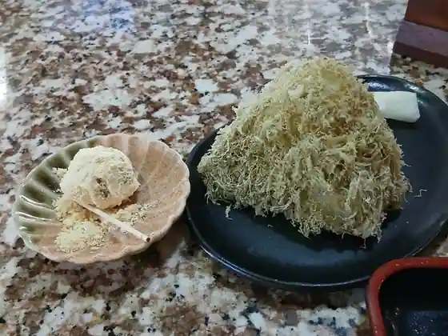
O Shimizu Iori
十割蕎麦 寺子屋
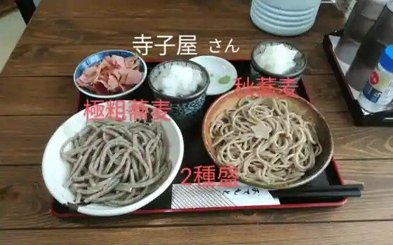
Ju Wari Soba Terakoya
越前そばの里
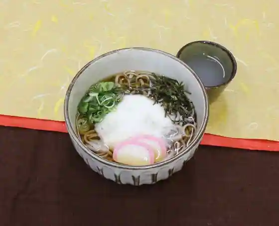
Echizen Sobano Sato
笹はら
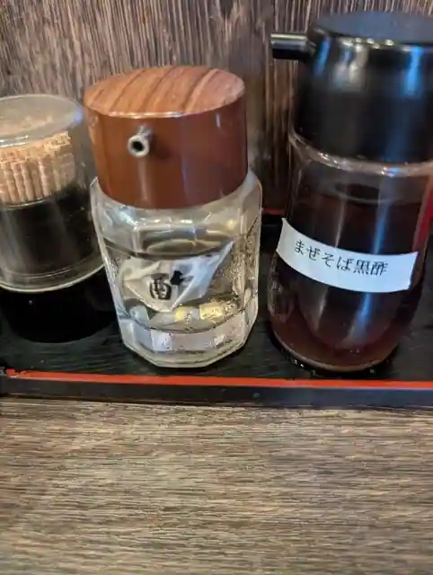
Sasa Hara
吉田食堂
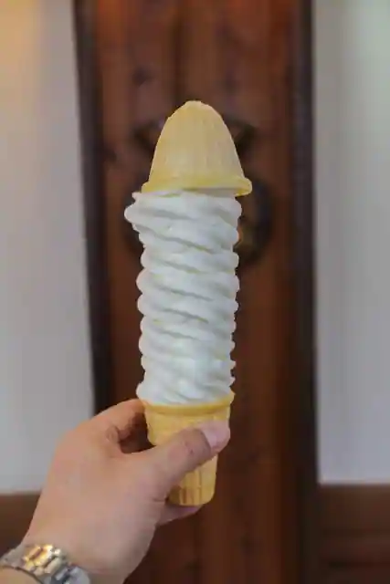
Yoshida Shokudo
宗近製麺所 おいしい麺の専門店
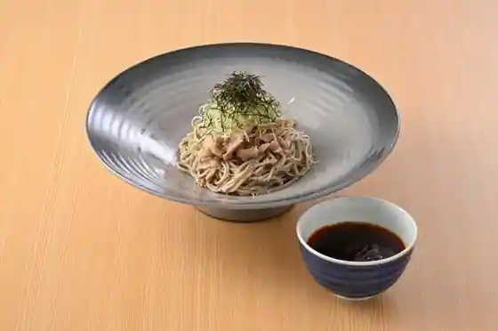
Munechika Seimen Tokoro Oishi Men No Senmon
若竹食堂
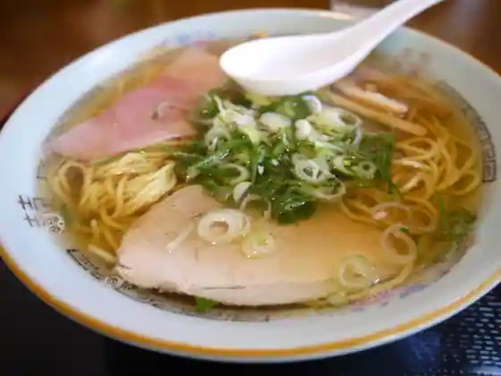
Wakatake Shokudo
リスボンエイト
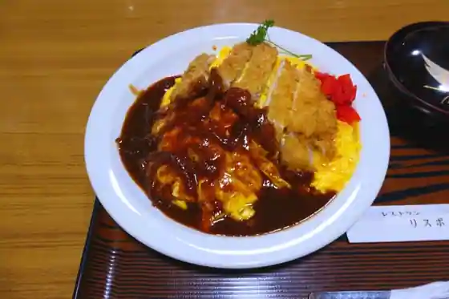
Risubon'Eito
ジャムハウス
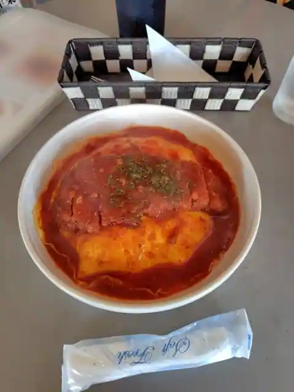
Jamu House
マル金そば
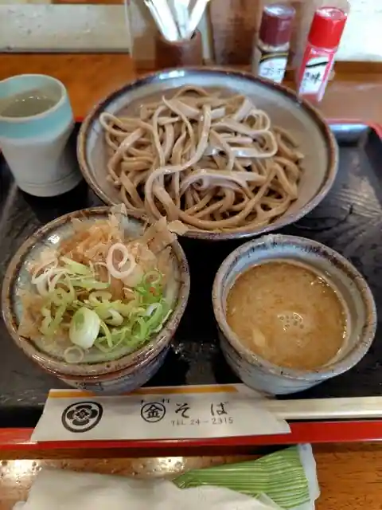
Maru Kin Soba
たかせや
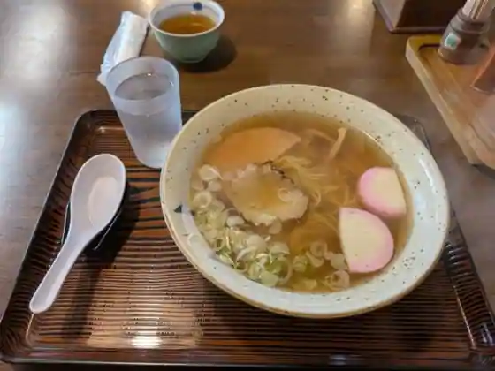
Takaseya
手打そば 大福
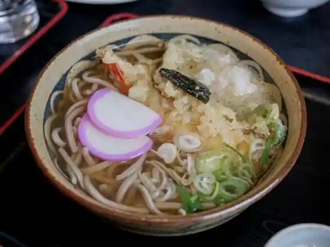
Teuchi Soba Daifuku
とんかつえびす庵
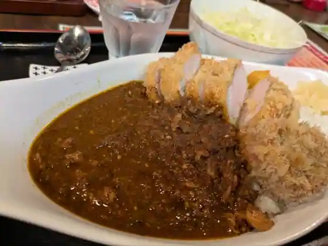
Tonkatsuebisu Iori
Sights
O Tanjo Tera

Okata Shrine Otaki Shrine

Sandomu Fukui

Murasakishikibu Park

Echizen Soba Village
Tagafunaifubirejji
Echizen Washi Village
Manyo Village Ajimano En
Hanagatami Park
Echizen Da Hamono Hall
Echizen Washi Village Papirusu Kan
Roadside Station Echizen Takefu
Takefu Chuo Park
Shikibu Onsen Yu Raku Sato
Echizen Washi Village U Ritsu no Kogei Kan
Oshio Hachiman Shrine
Go Ko Shrine
Masataka Tera Koyasu Kannon
Insetsu Tera
Ajimano Shrine
Reisenji
Soja Dai Shrine
Komaru Castle Ruins
Murasaki Yukari no Kan (Murasakishikibu to Ko Museum)
Hon Kyo Tera
Jofuku Tera
Yanagi Falls
Manyo Kiku Flower Garden
Shogaku Tera
Kokubunji (Echizen)
Kura no Tsuji
Mido Yo Gan Tera
Murasakishikibu Park Fuji no Kairo
Hino Shrine
Kotoku Tera
Manyo Village Ajimano En Museum Manyo Kan
Gekko Tera
Echizen Kakosatoshi Furusato Ehon Kan (Raku)
Ryusen Tera
Takara En Tera
(Chihiro no Umare Ta Ie) Memorial Museum
Mado An Tera
Mei Shiro Farm
Hino Yama
Echizen Imadate Geijutsu Kan
Echizen Washi Village Kami no Bunka Museum
Hachi Tsu Sugimori Ringaku Shu Center
Kojiro Park
Ho Yamadera
Kongo Yama Shari In Ao Tera
Akimitsu Tera no Dai Icho
Kyu Meshi Hachiman Shrine
Go Setsu Tera
Kawa Taku Yama Yoshiharu Tera
Echizen Aishinsupotsuariina (Echizen Takefu Chuo Koen Sogo Gym)
Toki Mizu
Yoshino Segawa
Zenkon Yama Hironori Tera
Jinmei Shrine (Kazusa Sha)
Echizen Takefu Public Hall Memorial Museum
Kinkasan Guriin Land
Ashi Yama Park
Myoko Tera
Furusato Gyararii Shuku Ra
Chiyo Tsuru Shrine
Echizen Chiyo Tsuru no Kan (Echizen Da Hamono Shinko Shisetsu)
Hon Ho Jinya Ato
Tera Town Tori (Echizen)
Kongo In
Oya Heri Yama Taiho Tera
Enkyo Yama Chokei Tera
Ryumon Tera
Tansu Town Tori
Rei Matsuyama Yokone Tera
Goryo Shrine
Dai Mushi Shrine
Joen Tera
Fuchu Bashaku Kaido
Fuji Kaki Shrine
En Miyadera
Kai Kaminarigashimizu
Kagaku Yama Kyo Tera
Makoto Sho Tera
Kyo Yama Hidehisa Tera
Odori Yama Sei Fuku Tera
Kinryu Yama Myokoku Tera
Echizen Yakusho